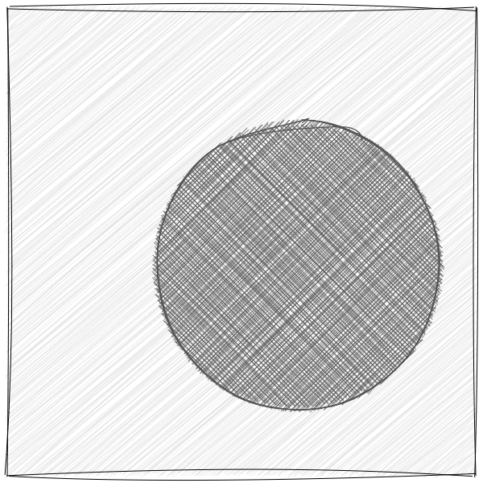

Image segmentation with PDEs
🗲matt hancock🗲
Image analysis
|
 |
Segmentation with PDEs
- Tell curve/surface how to move → PDE
- Minimize energy functional → PDE
- Numerically solve PDE → iterative segmentation method
Example 1
|
|
Example 1 (initialization failure)
|
|
Example 1 (velocity repairs)
|
|
Example 2
|
|
Implicit curve evolution: level set framework
- Implicit curve = {x : u(x,t) = 0}
- Enforce level curve moves in normal direction with speed V(x) yields level set evolution PDE: ut + V ||Du|| = 0

![[source]](https://commons.wikimedia.org/wiki/File:Level_set_method.png){kind=link}
Example 2
|
|
Some things to read
- Kass, Michael, Andrew Witkin, and Demetri Terzopoulos. "Snakes: Active contour models." International journal of computer vision (1988)
- Malladi, Ravi, James A. Sethian, and Baba C. Vemuri. "Shape modeling with front propagation: A level set approach." IEEE transactions on pattern analysis and machine intelligence (1995)
- Adalsteinsson, David, and James A. Sethian. "A fast level set method for propagating interfaces." Journal of computational physics (1995)